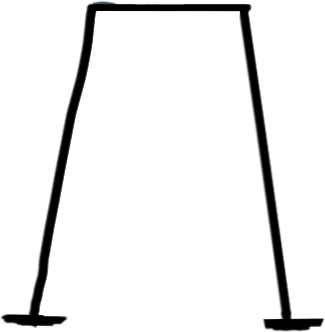
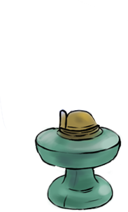
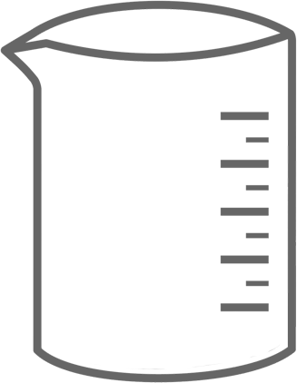

Hướng dẫn
| Kết luậndescription
Sau khi cô cạn, ta thu được muối dạng rắn còn nước bốc hơi hết
Khi đun dung dịch muối, nước bốc hơi trong quá trình bay hơi, nhưng muối không thể bay hơi được do tính chất của nó. Khi toàn bộ nước đã bay hơi hoàn toàn, chỉ còn lại các ion muối trong dung dịch ban đầu. Các ion này sẽ tạo thành các tinh thể muối và kết tụ lại thành một lượng muối rắn ở
đáy hoặc trên cạnh của bình chứa. Đây là hiện tượng gọi là kết tủa hay kết tụ của muối khi dung dịch bốc hơi.



